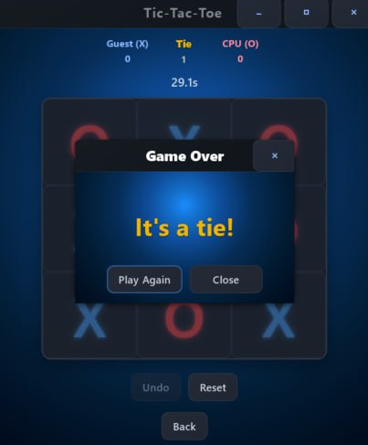
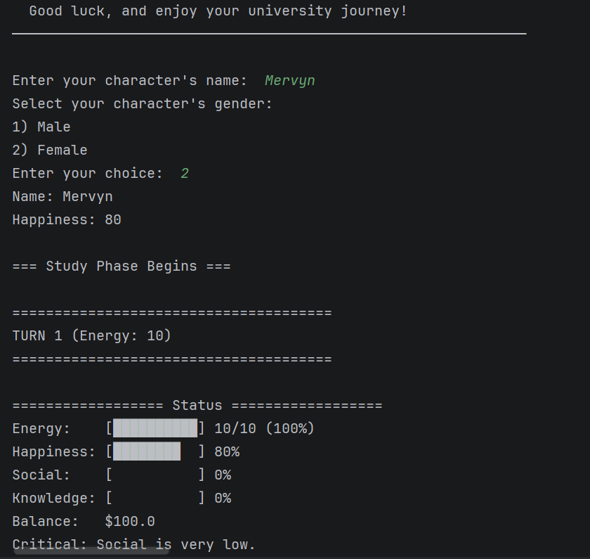
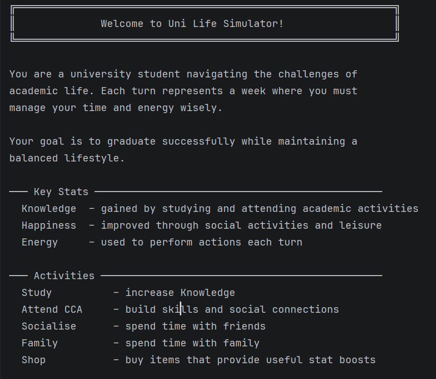
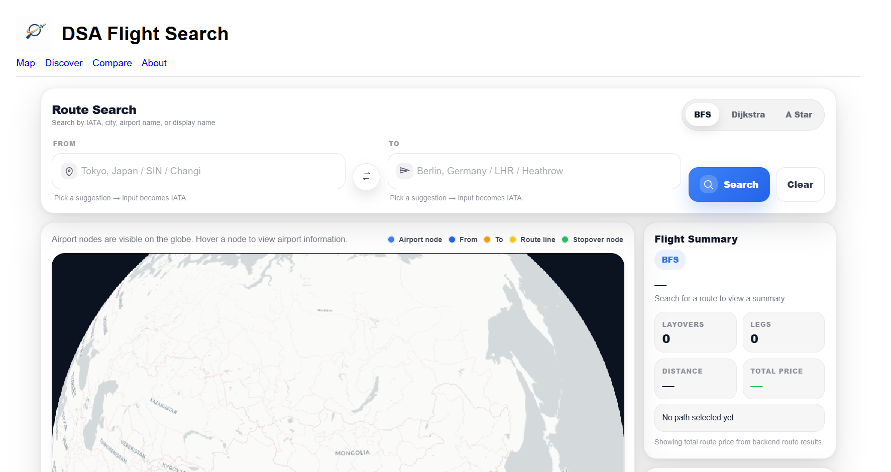
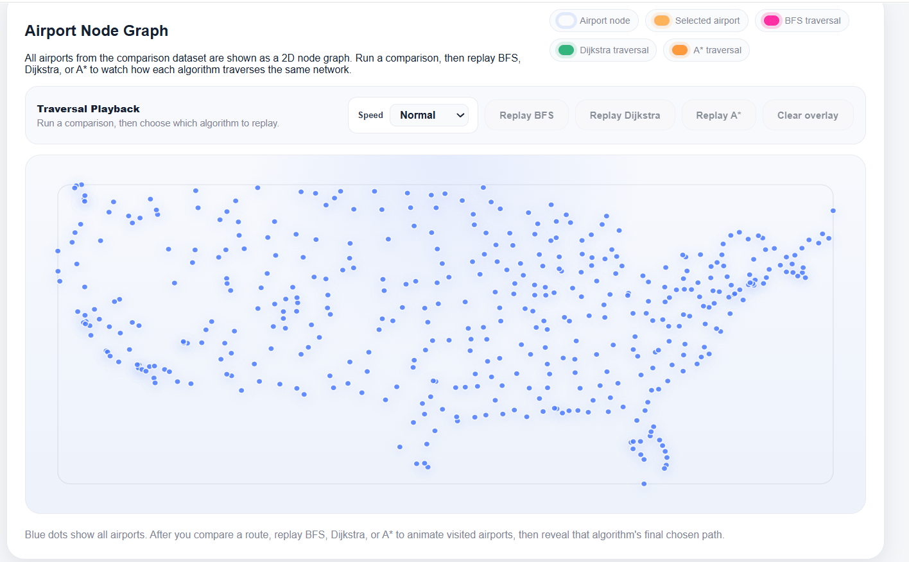
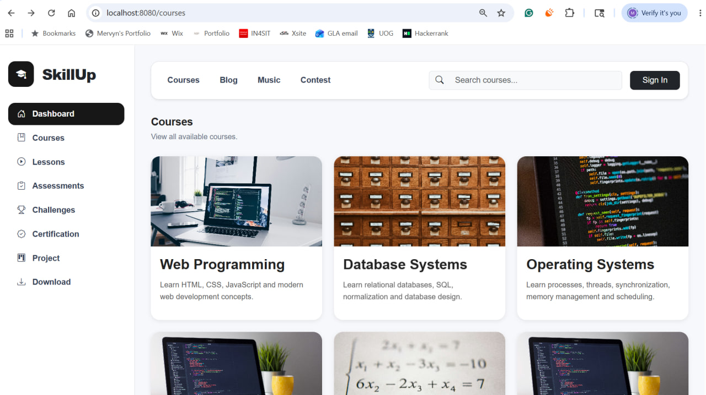
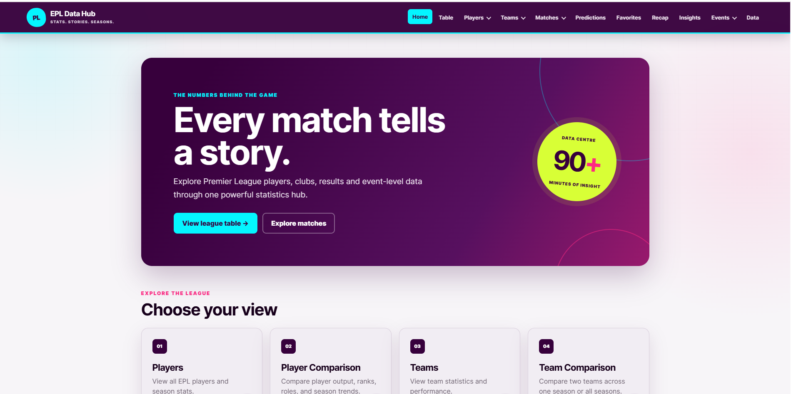
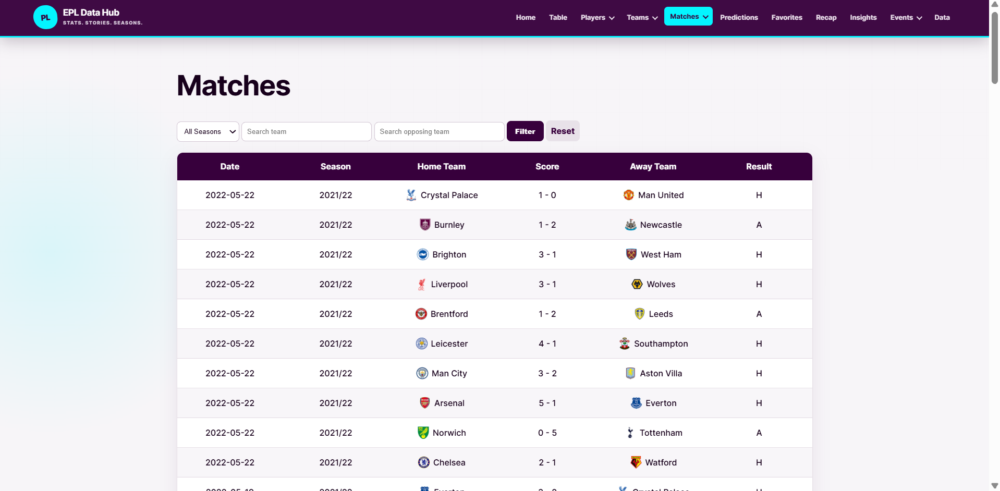

01
01Hawkr
My first JSP project - A Food delivery E-Commerce website
Selected digital work
Learning by building
01My first JSP project - A Food delivery E-Commerce website
 02
02My first back-end project - A website that intorduces people to online games.
 03
03My first front-end project - A website that introduces users to our IT services.
 04
04My first C# project - A windows form that allows users to book seats for a cinema
 05
05My Final Year Project - A one-stop platform for users to look for information about the real estate industry
Building across languages

01
02

03
A DSA project made with Python, using sorting and searching algorithms with different data structures.
View live project View GitHub
04
05
A database project made with Python Flask to store data about EPL players, matches and more.
View GitHub